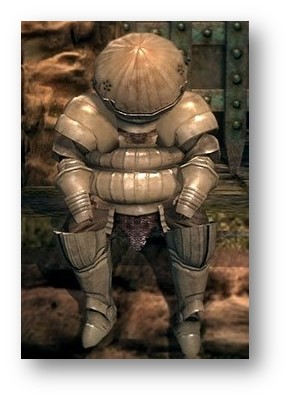
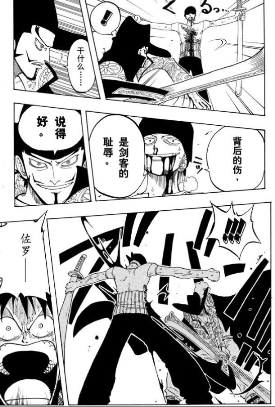

<!DOCTYPE html>
<html>
<head>
    <!-- hexo-inject:begin --><!-- hexo-inject:end --><meta charset="utf-8">
    
    <title>洋葱骑士的异世界之旅（一） | 晨曦图书馆</title>
    
    
        <meta name="keywords" content="洋葱骑士的异世界之旅（一）">
    
    <meta name="viewport" content="width=device-width, initial-scale=1, maximum-scale=1">
    <meta name="description" content="之前跟大R聊过很多次，大R一再指出不要试图教别人如何玩游戏，指责我的傲慢，所以在此我就不再以第一人称进行无聊的“说教”，而改用第三人称，给大家讲一个关于我的故事，关于洋葱骑士的故事。 洋葱是受大R的邀请降临到这个世界的。再次踏上熟悉又陌生的土地，洋葱还是想以骑士的身份开始这趟异世界之旅。但是用以前的ID不免触景生情，“取个什么新ID好呢？”洋葱这样想着。洋葱突然想到黑魂里的一个名字，“就叫洋葱骑">
<meta property="og:type" content="article">
<meta property="og:title" content="洋葱骑士的异世界之旅（一）">
<meta property="og:url" content="https://dawn-wow.info/wiki/洋葱骑士的异世界之旅/index.html">
<meta property="og:site_name" content="晨曦图书馆">
<meta property="og:description" content="之前跟大R聊过很多次，大R一再指出不要试图教别人如何玩游戏，指责我的傲慢，所以在此我就不再以第一人称进行无聊的“说教”，而改用第三人称，给大家讲一个关于我的故事，关于洋葱骑士的故事。 洋葱是受大R的邀请降临到这个世界的。再次踏上熟悉又陌生的土地，洋葱还是想以骑士的身份开始这趟异世界之旅。但是用以前的ID不免触景生情，“取个什么新ID好呢？”洋葱这样想着。洋葱突然想到黑魂里的一个名字，“就叫洋葱骑">
<meta property="og:image" content="https://dawn-wow.info/wiki/洋葱骑士的异世界之旅/onionknight1.jpg">
<meta property="og:image" content="https://dawn-wow.info/wiki/洋葱骑士的异世界之旅/suolong.PNG">
<meta property="og:updated_time" content="2019-10-28T15:10:18.990Z">
<meta name="twitter:card" content="summary">
<meta name="twitter:title" content="洋葱骑士的异世界之旅（一）">
<meta name="twitter:description" content="之前跟大R聊过很多次，大R一再指出不要试图教别人如何玩游戏，指责我的傲慢，所以在此我就不再以第一人称进行无聊的“说教”，而改用第三人称，给大家讲一个关于我的故事，关于洋葱骑士的故事。 洋葱是受大R的邀请降临到这个世界的。再次踏上熟悉又陌生的土地，洋葱还是想以骑士的身份开始这趟异世界之旅。但是用以前的ID不免触景生情，“取个什么新ID好呢？”洋葱这样想着。洋葱突然想到黑魂里的一个名字，“就叫洋葱骑">
<meta name="twitter:image" content="https://dawn-wow.info/wiki/洋葱骑士的异世界之旅/onionknight1.jpg">
    

    
        <link rel="alternate" href="/atom.xml" title="晨曦图书馆" type="application/atom+xml">
    

    
        <link rel="icon" href="/images/wiki.png">
    

    <link rel="stylesheet" href="/libs/font-awesome/css/font-awesome.min.css">
    <link rel="stylesheet" href="/libs/open-sans/styles.css">
    <link rel="stylesheet" href="/libs/source-code-pro/styles.css">

    <link rel="stylesheet" href="/css/style.css">
    <script src="/libs/jquery/2.1.3/jquery.min.js"></script>
    <script src="/libs/jquery/plugins/cookie/1.4.1/jquery.cookie.js"></script>
    
    
        <link rel="stylesheet" href="/libs/lightgallery/css/lightgallery.min.css">
    
    
        <link rel="stylesheet" href="/libs/justified-gallery/justifiedGallery.min.css"><!-- hexo-inject:begin --><!-- hexo-inject:end -->
    
    
    
    


</head>
</html>
<body>
    <!-- hexo-inject:begin --><!-- hexo-inject:end --><div id="container">
        <header id="header">
    <div id="header-main" class="header-inner">
        <div class="outer">
            <a href="/" id="logo">
                <i class="logo"></i>
                <span class="site-title">晨曦图书馆</span>
            </a>
            <nav id="main-nav">
                
                    <a class="main-nav-link" href="/">首页</a>
                
                    <a class="main-nav-link" href="/archives">归档</a>
                
                    <a class="main-nav-link" href="/categories">分类</a>
                
                    <a class="main-nav-link" href="/tags">标签</a>
                
                    <a class="main-nav-link" href="/about">关于晨曦</a>
                
                    <a class="main-nav-link" href="http://cn.60wdb.com" rel="external nofollow noopener noreferrer" target="_blank">六零数据库</a>
                
            </nav>
            
            <div id="search-form-wrap">

    <form class="search-form">
        <input type="text" class="ins-search-input search-form-input" placeholder="Search">
        <button type="submit" class="search-form-submit"></button>
    </form>
    <div class="ins-search">
    <div class="ins-search-mask"></div>
    <div class="ins-search-container">
        <div class="ins-input-wrapper">
            <input type="text" class="ins-search-input" placeholder="Type something...">
            <span class="ins-close ins-selectable"><i class="fa fa-times-circle"></i></span>
        </div>
        <div class="ins-section-wrapper">
            <div class="ins-section-container"></div>
        </div>
    </div>
</div>
<script>
(function (window) {
    var INSIGHT_CONFIG = {
        TRANSLATION: {
            POSTS: 'Posts',
            PAGES: 'Pages',
            CATEGORIES: 'Categories',
            TAGS: 'Tags',
            UNTITLED: '(Untitled)',
        },
        ROOT_URL: '/',
        CONTENT_URL: '/content.json',
    };
    window.INSIGHT_CONFIG = INSIGHT_CONFIG;
})(window);
</script>
<script src="/js/insight.js"></script>

</div>
        </div>
    </div>
    <div id="main-nav-mobile" class="header-sub header-inner">
        <table class="menu outer">
            <tr>
                
                    <td><a class="main-nav-link" href="/">首页</a></td>
                
                    <td><a class="main-nav-link" href="/archives">归档</a></td>
                
                    <td><a class="main-nav-link" href="/categories">分类</a></td>
                
                    <td><a class="main-nav-link" href="/tags">标签</a></td>
                
                    <td><a class="main-nav-link" href="/about">关于晨曦</a></td>
                
                    <td><a class="main-nav-link" href="http://cn.60wdb.com" rel="external nofollow noopener noreferrer" target="_blank">六零数据库</a></td>
                
                <td>
                    
    <div class="search-form">
        <input type="text" class="ins-search-input search-form-input" placeholder="Search">
    </div>

                </td>
            </tr>
        </table>
    </div>
</header>

        <div class="outer">
            
            
                <aside id="sidebar">
   
        
    <div class="widget-wrap" id="categories">
        <h3 class="widget-title">
            <span>categories</span>
            &nbsp;
            <a id="allExpand" href="#">
                <i class="fa fa-angle-double-down fa-2x"></i>
            </a>
        </h3>
        
        
        
         <ul class="unstyled" id="tree"> 
                    <li class="directory">
                        <a href="#" data-role="directory">
                            <i class="fa fa-folder"></i>
                            &nbsp;
                            公会建设
                        </a>
                         <ul class="unstyled" id="tree">  <li class="file"><a href="/wiki/关于晨曦公会活动制度的说明/">关于晨曦公会活动制度的说明</a></li>  </ul> 
                    </li> 
                    
                    <li class="directory open">
                        <a href="#" data-role="directory">
                            <i class="fa fa-folder-open"></i>
                            &nbsp;
                            晨曦夜话
                        </a>
                         <ul class="unstyled" id="tree">  <li class="file active"><a href="/wiki/洋葱骑士的异世界之旅/">洋葱骑士的异世界之旅（一）</a></li>  <li class="file"><a href="/wiki/洋葱骑士的异世界之旅（二）/">洋葱骑士的异世界之旅（二）</a></li>  </ul> 
                    </li> 
                     <li class="file"><a href="/wiki/index/">Welcome to 晨曦公会</a></li>  </ul> 
    </div>
    <script>
        $(document).ready(function() {
            var iconFolderOpenClass  = 'fa-folder-open';
            var iconFolderCloseClass = 'fa-folder';
            var iconAllExpandClass = 'fa-angle-double-down';
            var iconAllPackClass = 'fa-angle-double-up';
            // Handle directory-tree expansion:
            // 左键单独展开目录
            $(document).on('click', '#categories a[data-role="directory"]', function (event) {
                event.preventDefault();

                var icon = $(this).children('.fa');
                var expanded = icon.hasClass(iconFolderOpenClass);
                var subtree = $(this).siblings('ul');
                icon.removeClass(iconFolderOpenClass).removeClass(iconFolderCloseClass);
                if (expanded) {
                    if (typeof subtree != 'undefined') {
                        subtree.slideUp({ duration: 100 });
                    }
                    icon.addClass(iconFolderCloseClass);
                } else {
                    if (typeof subtree != 'undefined') {
                        subtree.slideDown({ duration: 100 });
                    }
                    icon.addClass(iconFolderOpenClass);
                }
            });
            // 右键展开下属所有目录
            $('#categories a[data-role="directory"]').bind("contextmenu", function(event){
                event.preventDefault();
                
                var icon = $(this).children('.fa');
                var expanded = icon.hasClass(iconFolderOpenClass);
                var listNode = $(this).siblings('ul');
                var subtrees = $.merge(listNode.find('li ul'), listNode);
                var icons = $.merge(listNode.find('.fa'), icon);
                icons.removeClass(iconFolderOpenClass).removeClass(iconFolderCloseClass);
                if(expanded) {
                    subtrees.slideUp({ duration: 100 });
                    icons.addClass(iconFolderCloseClass);
                } else {
                    subtrees.slideDown({ duration: 100 });
                    icons.addClass(iconFolderOpenClass);
                }
            })
            // 展开关闭所有目录按钮
            $(document).on('click', '#allExpand', function (event) {
                event.preventDefault();
                
                var icon = $(this).children('.fa');
                var expanded = icon.hasClass(iconAllExpandClass);
                icon.removeClass(iconAllExpandClass).removeClass(iconAllPackClass);
                if(expanded) {
                    $('#sidebar .fa.fa-folder').removeClass('fa-folder').addClass('fa-folder-open')
                    $('#categories li ul').slideDown({ duration: 100 });
                    icon.addClass(iconAllPackClass);
                } else {
                    $('#sidebar .fa.fa-folder-open').removeClass('fa-folder-open').addClass('fa-folder')
                    $('#categories li ul').slideUp({ duration: 100 });
                    icon.addClass(iconAllExpandClass);
                }
            });  
        });
    </script>

    
        
    <div class="widget-wrap widget-list">
        <h3 class="widget-title"><span>links</span></h3>
        <div class="widget">
            <ul>
                
                    <li>
                        <a href="http://acfun.cn" rel="external nofollow noopener noreferrer" target="_blank">Acfun</a>
                    </li>
                
                    <li>
                        <a href="http://bilibili.com" rel="external nofollow noopener noreferrer" target="_blank">Bilibili</a>
                    </li>
                
                    <li>
                        <a href="https://www.venganza.org/" rel="external nofollow noopener noreferrer" target="_blank">Church of the FSM</a>
                    </li>
                
                    <li>
                        <a href="http://www.scp-wiki.net/" rel="external nofollow noopener noreferrer" target="_blank">SCP-Foundation</a>
                    </li>
                
                    <li>
                        <a href="https://www.pixiv.net/" rel="external nofollow noopener noreferrer" target="_blank">Pixiv</a>
                    </li>
                
                    <li>
                        <a href="https://en.wikiquote.org/" rel="external nofollow noopener noreferrer" target="_blank">Wikiquote</a>
                    </li>
                
            </ul>
        </div>
    </div>


    
    <div id="toTop" class="fa fa-angle-up"></div>
</aside>
            
            <section id="main"><article id="post-洋葱骑士的异世界之旅" class="article article-type-post" itemscope="" itemprop="blogPost">
    <div class="article-inner">
        
        
            <header class="article-header">
                
                    <div class="article-meta">
                        
    <div class="article-category">
    	<i class="fa fa-folder"></i>
        <a class="article-category-link" href="/categories/晨曦夜话/">晨曦夜话</a>
    </div>

                        
                        
    <div class="article-date">
        <i class="fa fa-calendar"></i>
        <a href="/wiki/洋葱骑士的异世界之旅/">
            <time datetime="2019-10-27T20:43:39.000Z" itemprop="datePublished">2019-10-28</time>
        </a>
    </div>


                        
                    </div>
                
                
    
        <h1 class="article-title" itemprop="name">
            洋葱骑士的异世界之旅（一）
        </h1>
    

            </header>
        
        
        <div class="article-entry" itemprop="articleBody">
        
        
            
        
        
            <p></p>
<p>之前跟大R聊过很多次，大R一再指出不要试图教别人如何玩游戏，指责我的傲慢，所以在此我就不再以第一人称进行无聊的“说教”，而改用第三人称，给大家讲一个关于我的故事，关于洋葱骑士的故事。</p>
<p>洋葱是受大R的邀请降临到这个世界的。再次踏上熟悉又陌生的土地，洋葱还是想以骑士的身份开始这趟异世界之旅。但是用以前的ID不免触景生情，“取个什么新ID好呢？”洋葱这样想着。洋葱突然想到黑魂里的一个名字，“就叫洋葱骑士好了！”，洋葱把拳头往手掌里一拍。黑魂里的洋葱骑士虽然外表看起来愚蠢，但是实力却非常靠谱，有着强大的内心，是令人安心的角色。洋葱打定主意这次要成为那样的人。</p>
<p>就这样，在艾尔文森林的北郡修道院，洋葱骑士开始了他的异世界之旅。</p>
<p>洋葱不是第一次踏入这个世界了，但是上次来的时候每天都行色匆匆，在空中飞来飞去，这次总算有机会去感受脚下泥土的分量了。洋葱这样想着，但是很快他就会为这种想法尝尽苦头。从北郡修道院一路到到闪金镇，“人咋比怪还多呢！”，洋葱被眼前的景象惊呆了。凭借之前的经验，洋葱跟大R一起东讨鱼人，西征霍格，很快在艾尔文森林站稳了脚跟。</p>
<p>不久，洋葱骑士就升到了10级，这次他没有迟疑，果断的选择了坦克的道路。直面敌人，把后背交给队友，这样才是让人安心的人。洋葱突然想起了海贼王里的索隆，不由得自我感动了一把。</p>
<p>在完成西部荒野的探险之后，大R说没必要天天一起练级，非要凑在一起后果就是搞的俩人时间上都不舒服。洋葱想了想也是，但是还是想着后面可以一起任务，先不去赤脊山，去洛克莫丹吧。</p>
<p></p>
<p>这样，在随后的任务跑图升级路上，洋葱认识了很多人，其中就有一起在洛克莫丹剿灭穴居人的法师豆豆汁儿，后面简称豆子。</p>
<p>很多人都觉得洋葱技术不错，是个大腿，因此纷纷互加了好友。有天，洋葱突然意识到：加了好友又能如何呢？每天看着好友列表上在线或不在线的人，连句说hello的理由都没有。</p>
<p>洋葱想，要不成立个工会吧。把意思跟大R说了后，大R欣然同意。本来公会名字想取“The Dawn”，来自一个芬兰乐队Dreamtale的曲子，可能大家更熟悉的是它另外一个名字——亡灵序曲。洋葱特别喜欢曲子里的英文读白“As The last ship sailed towards the distant horizon，I sat there watching on a rock，My mind slowly drifting away，Forming into my… Dreamtale”。</p>
<p>但是后来又觉得“The Dawn”太过简短，要不叫“The Dawn of Night吧？”，洋葱提议到。“Dawn 本来就有 of night 的意思，”大R反驳说，“叫晨曦如何？”。洋葱同意了。</p>
<p>从暴风城公会注册员那里出来后，看着仅有两个签名的公会注册表，洋葱不由得叹了一口气。尝试着联系以前互加好友之人，要么没有回复，要么回复说已经有公会了。“对了，先把豆子名字签上吧！”，豆子跟洋葱这几天每天都有联系，他是第一次来艾泽拉斯，算是萌新，所以每天有很多问题，洋葱也是不厌其烦的进行解答。</p>
<p>洋葱本以为让豆子签下名是顺理成章的事，可是现实就是喜欢泼人冷水，“我跟几个朋友一起来玩的，准备自己组一个公会。”“那正好啊，一起来签名好了！”“我再跟他们商量下。”，就这样又过了两天，签名单上依旧只有两个名字。</p>
<p>或许出于对洋葱的愧疚，豆子终于在注册表上署下了名字。洋葱感到无比振奋，“终于有了一个好的开端了！”。洋葱梦想着在之后的探险中，认识无数个像豆子这样的人，彼此认可，最终签下友谊的见证。但是刚过了一天，洋葱突然发现注册表上豆子的名字消失了。洋葱没有问原因是什么，只是突然想起向大R的承诺，“剩下的签名我来搞定！”。男人的承诺，如果就这么放弃，还怎么算是令人放心的人呢。</p>
<p>洋葱想到了一个主意，一个之前不屑于拿来用的主意。看着包包里仅有的40个银币，洋葱下定了决心。于是，在闪金镇“狮王之傲”旅馆前面，出现了这样一个叫卖的身影——“公会署名送包包了！署名成功即可领取！公会成立后可以自由退出！”。</p>
<p>就这样，晨曦公会成立了。</p>
<h2 id="一点趣事"><a href="#一点趣事" class="headerlink" title="一点趣事"></a>一点趣事</h2><blockquote>
<ul>
<li>据穆丝所说，他即为当时被喊话叫来最早署名的成员之一，可惜当时洋葱未截图留念。</li>
<li>豆子老是夜里上线，洋葱后来才得知他现在在美国，和这边时差12个小时。豆子后来又再次加入了晨曦，并一直保持着最高等级记录。但是再后面，仍然选择了与之前的好友一起活动，与洋葱再无联系。</li>
</ul>
</blockquote>

            </div>
        
        <footer class="article-footer">
        </footer>
    </div>
</article>


    
<nav id="article-nav">
    
        <a href="/wiki/洋葱骑士的异世界之旅（二）/" id="article-nav-newer" class="article-nav-link-wrap">
            <strong class="article-nav-caption">Newer</strong>
            <div class="article-nav-title">
                
                    洋葱骑士的异世界之旅（二）
                
            </div>
        </a>
    
    
        <a href="/wiki/关于晨曦公会活动制度的说明/" id="article-nav-older" class="article-nav-link-wrap">
            <strong class="article-nav-caption">Older</strong>
            <div class="article-nav-title">关于晨曦公会活动制度的说明</div>
        </a>
    
</nav>


    
    


<!-- baidu url auto push script -->
<script type="text/javascript">
    !function(){var e=/([http|https]:\/\/[a-zA-Z0-9\_\.]+\.baidu\.com)/gi,r=window.location.href,o=document.referrer;if(!e.test(r)){var n="//api.share.baidu.com/s.gif";o?(n+="?r="+encodeURIComponent(document.referrer),r&&(n+="&l="+r)):r&&(n+="?l="+r);var t=new Image;t.src=n}}(window);
</script>     
</section>
        </div>
        <footer id="footer">
    <div class="outer">
        <div id="footer-info" class="inner">
            Onion Knight &copy; 2019
            <a rel="external nofollow noopener noreferrer" href="http://creativecommons.org/licenses/by-nc-nd/4.0/" target="_blank"></a>
            <br> Powered by <a href="http://hexo.io/" target="_blank" rel="external nofollow noopener noreferrer">Hexo</a>. Theme - <a href="https://github.com/HtPsi/hexo-theme-Wikitten" rel="external nofollow noopener noreferrer" target="_blank">Wikitten</a>
        </div>
    </div>
</footer>

        

    
        <script src="/libs/lightgallery/js/lightgallery.min.js"></script>
        <script src="/libs/lightgallery/js/lg-thumbnail.min.js"></script>
        <script src="/libs/lightgallery/js/lg-pager.min.js"></script>
        <script src="/libs/lightgallery/js/lg-autoplay.min.js"></script>
        <script src="/libs/lightgallery/js/lg-fullscreen.min.js"></script>
        <script src="/libs/lightgallery/js/lg-zoom.min.js"></script>
        <script src="/libs/lightgallery/js/lg-hash.min.js"></script>
        <script src="/libs/lightgallery/js/lg-share.min.js"></script>
        <script src="/libs/lightgallery/js/lg-video.min.js"></script>
    
    
        <script src="/libs/justified-gallery/jquery.justifiedGallery.min.js"></script>
    


<!-- Custom Scripts -->
<script src="/js/main.js"></script>

    </div><!-- hexo-inject:begin --><!-- Begin: Injected MathJax -->
<script type="text/x-mathjax-config">
  MathJax.Hub.Config({"tex2jax":{"inlineMath":[["$","$"],["\\(","\\)"]],"skipTags":["script","noscript","style","textarea","pre","code"],"processEscapes":true},"TeX":{"equationNumbers":{"autoNumber":"AMS"}}});
</script>

<script type="text/x-mathjax-config">
  MathJax.Hub.Queue(function() {
    var all = MathJax.Hub.getAllJax(), i;
    for(i=0; i < all.length; i += 1) {
      all[i].SourceElement().parentNode.className += ' has-jax';
    }
  });
</script>

<script type="text/javascript" src="//cdn.mathjax.org/mathjax/latest/MathJax.js?config=TeX-AMS-MML_HTMLorMML">
</script>
<!-- End: Injected MathJax -->
<!-- hexo-inject:end -->
</body>
